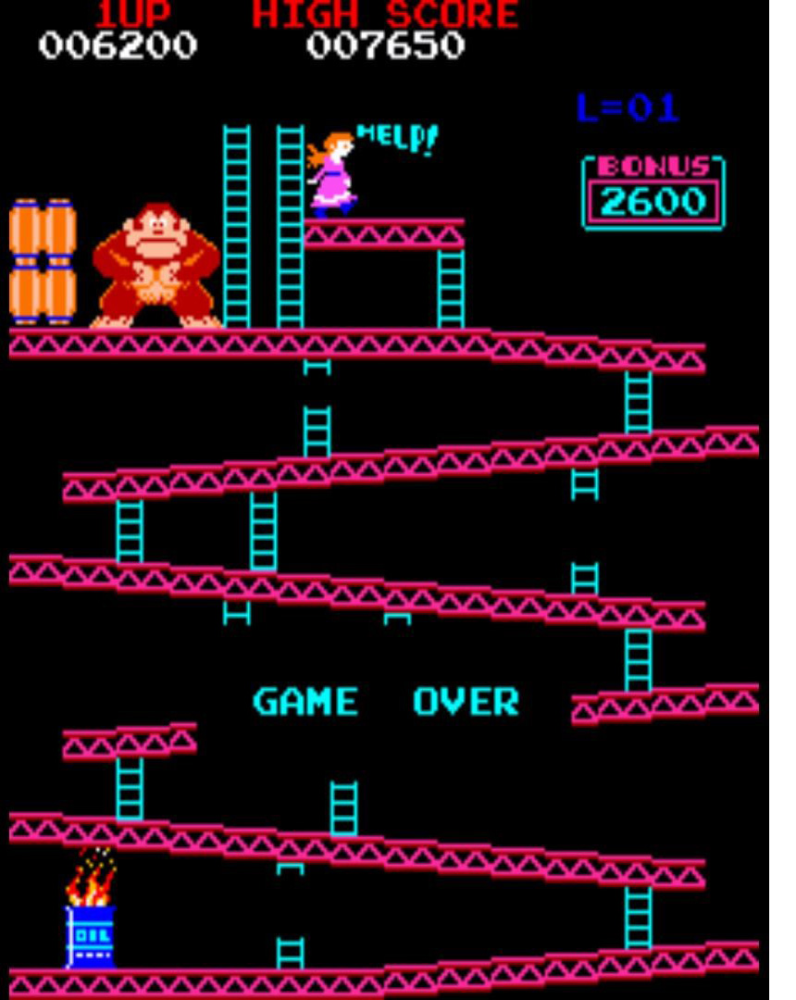

Princesse Peach (Mario 1985)
Nintendo
Les premiers personnages féminins ont été à la base créée pour meubler les jeux vidéo. Le premier jeu à mettre en place une fille est le jeu Donkey Kong, créé par Shigueru Miyamoto en 1981 avec Nintendo. Un jeu mettant en avant le héros Jumpman devant sauver sa dulcinée des mains d’un méchant gorille. La princesse nommée « Lady » (à noter le fait qu’elle ne porte pas de prénom) est donc là que pour donner une raison au jeu.
Plus tard, la dulcinée de Jumpman -devenu Mario- deviendra la princesse Peach. Archétype de la demoiselle en détresse. Sa première apparition fut dans le Super Mario Bros Nintendo sur NES en 1985.
Celle-ci au départ rousse dans un souci de mémoire du jeu prendra un virage serré en 1991, et devient blonde aux yeux bleus rappelant les princesses des contes Disney traditionnel.
Ce thème Moyenâgeux a été pris et repris dans de nombreux jeux, on peut citer la princesse Zelda dans La légende de Zelda, toujours par Miyamoto chez Nintendo en 1986. Celle-ci tout comme la princesse Peach attend d’être secouru par le héros principal du jeu, Link. A l’instar de Peach elle deviendra blonde aux yeux bleus au cours des différents opus. On a donc dans ces jeux vidéo une représentation qui donne une image faible et inférieure de la femme de l’époque. Elle n’est capable de rien faire par elle-même mais est surtout considéré comme un trophée.